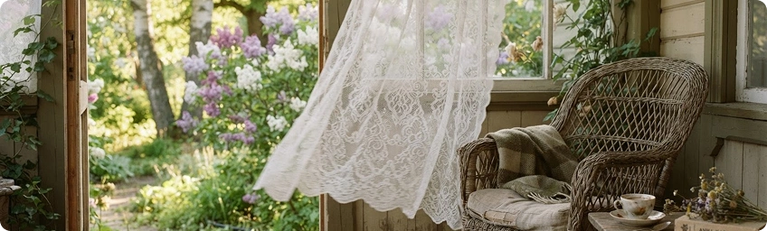

Первая любовь
I

Мне было тогда шестнадцать лет. Дело происходило летом 1833 года. Я жил в Москве у моих родителей. Они наняли дачу у Калужской заставы, против Нескучного. Я готовился в университет, но работал очень мало и не торопился.
Никто не стеснял моей свободы. Я делал что хотел, особенно после расставанья с последним моим гувернёром-французом, который никак не мог привыкнуть к мысли, что он попал «как бомба» в Россию, и по целым дням, с ожесточённым выражением на лице, валялся на постели.
Отец обходился со мною равнодушно-ласково; мать почти не обращала на меня внимания, хотя у неё, кроме меня, детей не было: она была погружена в другие заботы.
Отец мой, человек ещё молодой и очень красивый, женился на ней по расчёту: она была на десять лет старше его. Мать моя вела печальную жизнь: она беспрестанно волновалась, ревновала, сердилась — но не при отце, его она очень боялась, и он держал себя строго, холодно, отдалённо.
Я никогда не забуду тех первых недель, проведённых мною на даче. Погода стояла прекрасная; мы выехали из города девятого мая, в самый Николин день. Я гулял — то в саду нашей дачи, то в Нескучном, то за заставой.